devtools::load_all()
library(here)
library(tidyr) # for data manipulation
library(dplyr) # for data manipulation
library(ggplot2) # plotting
library(performance) # diagnostic
library(car) # general utilities
library(MuMIn) # model selection
library(patchwork)Lab 1
Overview1
We are gonna work with the admission.csv dataset containing \(n = 400\) students for the admission to the UCLA University. A researcher is interested in how variables, such as gre (Graduate Record Exam scores), gpa (GPA), rank (prestige of the undergraduate institution) have an influence for the admission into graduate school. The response variable, admit/don’t admit, is a binary variable.
- Importing data and check
- Exploratory data analysis
- Model fitting with
glm() - Model diagnostic
- Interpreting parameters
- Model selection
- Fitting the model with interactions
- Plotting results
- Interpreting the parameters
- Model comparison for the interactions effect
1. Importing data
We need to set the working directory on the root of the course folder using set.wd(). Using R Projects is just necessary to open the .RProj file and the working directory will be automatically correctly selected.
# reading data
load(here("data", "admission.rda"))
# first rows
head(admission) admit gre gpa rank
1 0 456 5.571 3
2 1 792 5.637 3
3 1 960 6.000 1
4 1 768 5.109 4
5 0 624 4.823 4
6 1 912 4.900 2# check dataset structure
str(admission)'data.frame': 400 obs. of 4 variables:
$ admit: int 0 1 1 1 0 1 1 0 1 0 ...
$ gre : int 456 792 960 768 624 912 672 480 648 840 ...
$ gpa : num 5.57 5.64 6 5.11 4.82 ...
$ rank : int 3 3 1 4 4 2 1 2 3 2 ...# summary statistics
summary(admission) admit gre gpa rank
Min. :0.0000 Min. :264.0 Min. :4.086 Min. :1.000
1st Qu.:0.0000 1st Qu.:624.0 1st Qu.:5.043 1st Qu.:2.000
Median :0.0000 Median :696.0 Median :5.335 Median :2.000
Mean :0.3175 Mean :705.5 Mean :5.329 Mean :2.485
3rd Qu.:1.0000 3rd Qu.:792.0 3rd Qu.:5.637 3rd Qu.:3.000
Max. :1.0000 Max. :960.0 Max. :6.000 Max. :4.000 It is very important that each variable is correctly interpreted by R:
admitis a binary variable stored as integer (0 and 1)greis a numerical variable stored as integergpais a numerical variables stored as double precision numberrankis a numerical variables stored as integer
We could change the type of rank to factor because we are going to use it as a categorical (maybe ordinal) variable.
admission$rankc <- factor(admission$rank, levels = 1:4, labels = 1:4)2. Exploratory data analysis
We can plot the univariate distribution of each variable:
# gre and gpa
admission |>
select(gre, gpa) |>
pivot_longer(1:2) |>
ggplot(aes(x = value)) +
geom_histogram(col = "black",
fill = "lightblue") +
facet_wrap(~name, scales = "free")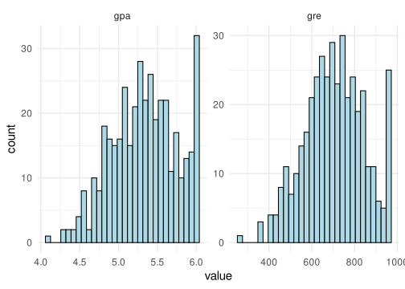
admission |>
ggplot(aes(x = rank)) +
geom_bar()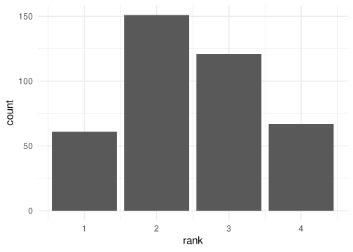
admission |>
ggplot(aes(x = admit)) +
geom_bar()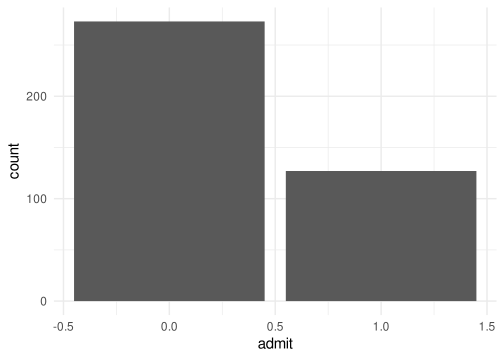
Then we can cut the gpa and gre variabiles into categories and plot the admissions for each bin (i.e., a contingency table):
admission$gpa_c <- cut(admission$gpa, seq(4, 6, 0.2), labels = FALSE)
admission$gre_c <- cut(admission$gre, seq(260, 960, 50), labels=FALSE)# admission ~ gpa
admission |>
ggplot(aes(x = gpa_c, fill = factor(admit))) +
geom_bar(position = position_dodge()) +
labs(fill = "Admission") +
theme(legend.position = "bottom")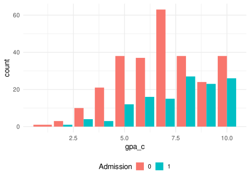
# admission ~ gre
admission |>
ggplot(aes(x = gre_c, fill = factor(admit))) +
geom_bar(position = position_dodge()) +
labs(fill = "Admission") +
theme(legend.position = "bottom")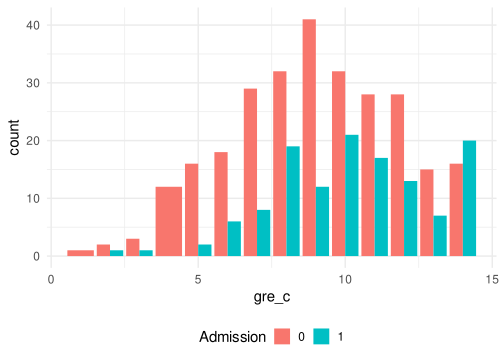
Given that the number of admitted is lower than the number of non admitted, we can have a look at the proportion of admission for each bin:
admission |>
group_by(gpa_c) |>
summarise(admit = mean(admit),
non_admit = 1 - admit) |>
pivot_longer(2:3) |>
ggplot(aes(x = factor(gpa_c), y = value, fill = name)) +
geom_col() +
labs(fill = "Admission",
y = "%",
x = "gpa") +
theme(legend.position = "bottom")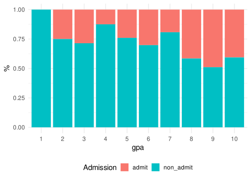
admission |>
group_by(gre_c) |>
summarise(admit = mean(admit),
non_admit = 1 - admit) |>
pivot_longer(2:3) |>
ggplot(aes(x = factor(gre_c), y = value, fill = name)) +
geom_col() +
labs(fill = "Admission",
y = "%",
x = "gpa") +
theme(legend.position = "bottom")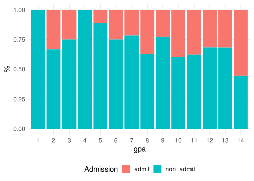
Finally we can have a look at the admissions as a function of the rank of the undergrad institution:
# margin = 2 means that each colum will sum to 1
prop.table(table(admission$admit, admission$rank), margin = 2)
1 2 3 4
0 0.4590164 0.6423841 0.7685950 0.8208955
1 0.5409836 0.3576159 0.2314050 0.1791045Clearly as the rank of the institute decrease (from 1 to 4) also the proportions of admissions decrease.
3. Model fitting with glm()
Now we ca fit the model using glm(). Let’s start by fitting a null model with no predictors. We choose a binomial glm with a logit link function.
fit0 <- glm(admit ~ 1, data = admission, family = binomial(link = "logit"))
summary(fit0)
Call:
glm(formula = admit ~ 1, family = binomial(link = "logit"), data = admission)
Coefficients:
Estimate Std. Error z value Pr(>|z|)
(Intercept) -0.7653 0.1074 -7.125 1.04e-12 ***
---
Signif. codes: 0 '***' 0.001 '**' 0.01 '*' 0.05 '.' 0.1 ' ' 1
(Dispersion parameter for binomial family taken to be 1)
Null deviance: 499.98 on 399 degrees of freedom
Residual deviance: 499.98 on 399 degrees of freedom
AIC: 501.98
Number of Fisher Scoring iterations: 4Then we can fit the full model by putting all predictors:
fit1 <- glm(admit ~ gre + gpa + rankc, family = binomial(link = "logit"), data = admission)
summary(fit1)
Call:
glm(formula = admit ~ gre + gpa + rankc, family = binomial(link = "logit"),
data = admission)
Coefficients:
Estimate Std. Error z value Pr(>|z|)
(Intercept) -5.1607502 1.5547311 -3.319 0.000902 ***
gre 0.0019360 0.0009107 2.126 0.033509 *
gpa 0.7245343 0.3017552 2.401 0.016347 *
rankc2 -0.6755746 0.3165961 -2.134 0.032854 *
rankc3 -1.3412412 0.3453868 -3.883 0.000103 ***
rankc4 -1.5509436 0.4179394 -3.711 0.000207 ***
---
Signif. codes: 0 '***' 0.001 '**' 0.01 '*' 0.05 '.' 0.1 ' ' 1
(Dispersion parameter for binomial family taken to be 1)
Null deviance: 499.98 on 399 degrees of freedom
Residual deviance: 458.27 on 394 degrees of freedom
AIC: 470.27
Number of Fisher Scoring iterations: 44. Model diagnostic
Firstly we can have a look to the residual ~ fitted plot:
car::residualPlot(fit1)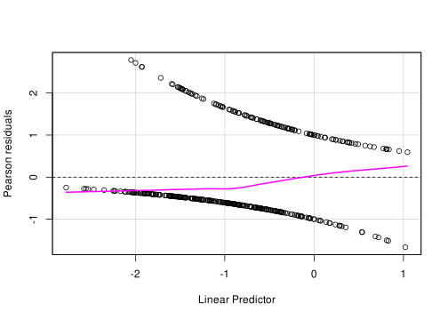
Given that the admit is a binary variables and we are using a bernoulli model we can use the binned residuals to have a better idea:
binres <- data.frame(performance::binned_residuals(fit1, n_bins = 20))
binres |>
ggplot(aes(x = xbar, y = ybar)) +
geom_point() +
geom_line(aes(x = xbar, y = 2*se)) +
geom_line(aes(x = xbar, y = -2*se)) +
ylim(c(-0.5,0.5)) +
xlab("Binned fitted(fit)") +
ylab("Binned residuals(fit)")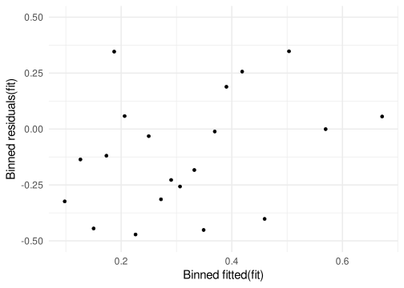
Then we can check each predictors as a function of residuals:
residualPlots(fit1, tests = FALSE)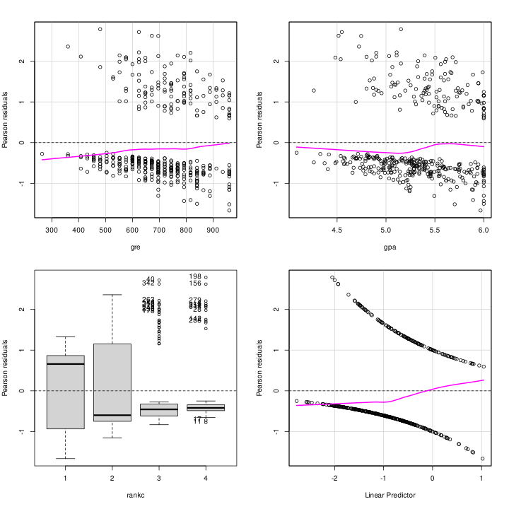
Then we can check for influential observations:
infl <- infl_measure(fit1)
head(infl) dfb.1_ dfb.gre dfb.gpa dfb.rnk2 dfb.rnk3 dfb.rnk4
1 0.001928838 0.054851573 -0.02429314 -0.0005685401 -0.027482122 0.0011303580
2 -0.032365665 0.030589434 0.01842224 0.0011855080 0.093214421 0.0018889694
3 -0.043753262 0.047057023 0.03647553 -0.0692282501 -0.067292670 -0.0508865383
4 0.038875345 0.049085495 -0.05725416 -0.0021779468 0.005243727 0.1674589133
5 -0.021997746 0.004348061 0.01925034 0.0009501938 -0.001356376 -0.0370388854
6 0.069347733 0.137651326 -0.12263325 0.0568266645 0.011865765 0.0004088698
dffit cov.r cook.d hat
1 -0.07289093 1.0267984 0.0005671995 0.01604128
2 0.15369752 0.9935677 0.0044945856 0.01089440
3 0.11248746 1.0312387 0.0014330276 0.02332145
4 0.22676575 0.9862142 0.0132208550 0.01672049
5 -0.05402182 1.0254753 0.0003020368 0.01316096
6 0.19463628 1.0104116 0.0062497431 0.02134213Plotting using car
car::influenceIndexPlot(fit1, vars = c("Studentized", "hat", "Cook"))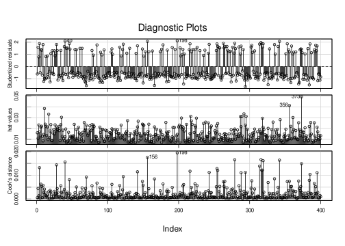
Plotting also the dfbeta:
dfbeta_plot(fit1)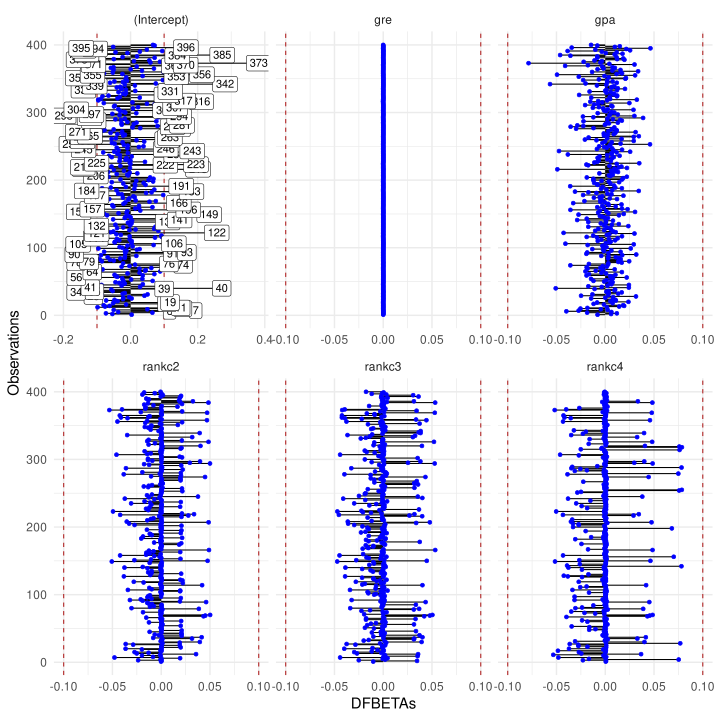
Check if there are observations with high standardized (studentized) residuals:
outlierTest(fit1) # Testing outliersNo Studentized residuals with Bonferroni p < 0.05
Largest |rstudent|:
rstudent unadjusted p-value Bonferroni p
198 2.110769 0.034792 NAFor potentially influential observations we could fir a model subtracting that specific observation and compare coefficients. This is similar to the dfbeta metric that suggest no influential observations on model parameters.
# Is 198 really influential?
fit1_no198 <- update(fit1, subset=-c(198))
compareCoefs(fit1, fit1_no198)Calls:
1: glm(formula = admit ~ gre + gpa + rankc, family = binomial(link =
"logit"), data = admission)
2: glm(formula = admit ~ gre + gpa + rankc, family = binomial(link =
"logit"), data = admission, subset = -c(198))
Model 1 Model 2
(Intercept) -5.16 -5.25
SE 1.55 1.56
gre 0.001936 0.002097
SE 0.000911 0.000919
gpa 0.725 0.720
SE 0.302 0.303
rankc2 -0.676 -0.675
SE 0.317 0.317
rankc3 -1.341 -1.340
SE 0.345 0.346
rankc4 -1.551 -1.645
SE 0.418 0.427
5. Interpreting parameters
Firstly, we can extract model parameters, taking the exponential to interpret them as odds ratios:
broom::tidy(fit1, exponentiate = TRUE, conf.int = TRUE)# A tibble: 6 × 7
term estimate std.error statistic p.value conf.low conf.high
<chr> <dbl> <dbl> <dbl> <dbl> <dbl> <dbl>
1 (Intercept) 0.00574 1.55 -3.32 0.000902 0.000256 0.115
2 gre 1.00 0.000911 2.13 0.0335 1.00 1.00
3 gpa 2.06 0.302 2.40 0.0163 1.15 3.76
4 rankc2 0.509 0.317 -2.13 0.0329 0.272 0.945
5 rankc3 0.262 0.345 -3.88 0.000103 0.131 0.511
6 rankc4 0.212 0.418 -3.71 0.000207 0.0907 0.471We can interpret these parameters as: for a unit increase in the x, the odds of being accepted in grad school increase by exp(beta). If we multiply the exp(beta)*100 we obtain the expected increase in percentage. Given that we have multiple parameters, when we intepret a specific parameter we are controlling for other parameters.
broom::tidy(fit1, exponentiate = TRUE, conf.int = TRUE) |>
slice(-1) |>
mutate(estperc = estimate * 100)# A tibble: 5 × 8
term estimate std.error statistic p.value conf.low conf.high estperc
<chr> <dbl> <dbl> <dbl> <dbl> <dbl> <dbl> <dbl>
1 gre 1.00 0.000911 2.13 0.0335 1.00 1.00 100.
2 gpa 2.06 0.302 2.40 0.0163 1.15 3.76 206.
3 rankc2 0.509 0.317 -2.13 0.0329 0.272 0.945 50.9
4 rankc3 0.262 0.345 -3.88 0.000103 0.131 0.511 26.2
5 rankc4 0.212 0.418 -3.71 0.000207 0.0907 0.471 21.2To better interpret the parameters we need to make sure that the scale is meaningful. For example, the gre effect seems to be very small but statistically significant. The reason is that a unit increase in gre is very small. We could for example rescale the variable dividing for a constant term:
gre <- admission |>
ggplot(aes(x = gre)) +
geom_histogram(col = "black",
fill = "dodgerblue",
bins = 30)
gre100 <- admission |>
ggplot(aes(x = gre/100)) +
geom_histogram(col = "black",
fill = "dodgerblue",
bins = 30)
gre | gre100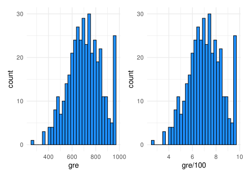
Let’s try fitting the model with the new variable:
admission$gre100 <- admission$gre/100
fit2 <- glm(admit ~ gre100 + gpa + rankc, family = binomial(link = "logit"), data = admission)
summary(fit2)
Call:
glm(formula = admit ~ gre100 + gpa + rankc, family = binomial(link = "logit"),
data = admission)
Coefficients:
Estimate Std. Error z value Pr(>|z|)
(Intercept) -5.16075 1.55473 -3.319 0.000902 ***
gre100 0.19360 0.09107 2.126 0.033509 *
gpa 0.72453 0.30176 2.401 0.016347 *
rankc2 -0.67557 0.31660 -2.134 0.032854 *
rankc3 -1.34124 0.34539 -3.883 0.000103 ***
rankc4 -1.55094 0.41794 -3.711 0.000207 ***
---
Signif. codes: 0 '***' 0.001 '**' 0.01 '*' 0.05 '.' 0.1 ' ' 1
(Dispersion parameter for binomial family taken to be 1)
Null deviance: 499.98 on 399 degrees of freedom
Residual deviance: 458.27 on 394 degrees of freedom
AIC: 470.27
Number of Fisher Scoring iterations: 4broom::tidy(fit2, exponentiate = TRUE, conf.int = TRUE) |>
slice(-1) |>
mutate(estperc = estimate * 100)# A tibble: 5 × 8
term estimate std.error statistic p.value conf.low conf.high estperc
<chr> <dbl> <dbl> <dbl> <dbl> <dbl> <dbl> <dbl>
1 gre100 1.21 0.0911 2.13 0.0335 1.02 1.45 121.
2 gpa 2.06 0.302 2.40 0.0163 1.15 3.76 206.
3 rankc2 0.509 0.317 -2.13 0.0329 0.272 0.945 50.9
4 rankc3 0.262 0.345 -3.88 0.000103 0.131 0.511 26.2
5 rankc4 0.212 0.418 -3.71 0.000207 0.0907 0.471 21.2Now the gre effect is more meaningful. Notice how the overall model fitting is not changed togheter with other parameters. We are only rescaling variables.
Generally we can plot the effects for a better overview of the model:
plot(effects::allEffects(fit1))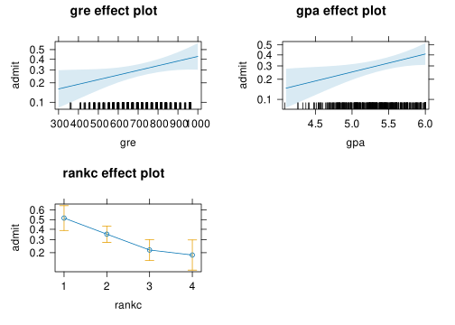
To interpret the parameters in probability terms we could use the divide by 4 rule that express the maximum slope (i.e., the maximum probability increase):
coef(fit2)[c("gpa", "gre100")]/4 gpa gre100
0.18113356 0.04840012 Similarly we can compute the marginal effects for each variable that represents the average slope:
marginaleffects::avg_slopes(fit2,
variables = c("gpa", "gre100"))
Term Estimate Std. Error z Pr(>|z|) S 2.5 % 97.5 %
gpa 0.1409 0.0573 2.46 0.0139 6.2 0.02867 0.2531
gre100 0.0376 0.0174 2.17 0.0303 5.0 0.00358 0.0717
Columns: term, estimate, std.error, statistic, p.value, s.value, conf.low, conf.high
Type: response Beyond the model coefficients, we could use a likelihood ratio test. Let’s start by comparing the null model with the current model. We hope that our variables combinations are doing a better job compared to a null model:
anova(fit0, fit1, test = "LRT")Analysis of Deviance Table
Model 1: admit ~ 1
Model 2: admit ~ gre + gpa + rankc
Resid. Df Resid. Dev Df Deviance Pr(>Chi)
1 399 499.98
2 394 458.27 5 41.702 6.767e-08 ***
---
Signif. codes: 0 '***' 0.001 '**' 0.01 '*' 0.05 '.' 0.1 ' ' 1As expected from model summary and the deviance reduction, the variables are useful to predict the probability of admission. How useful? we could use some \(R^2\)-like measures:
performance::r2_tjur(fit1)Tjur's R2
0.1023616 Despite useful, the model has a low \(R^2\). Let’s see the error rate of the model compared to the null model
error_rate(fit0)[1] 0.3175error_rate(fit1)[1] 0.296. Model selection
We could try a model comparison starting from the null model and finishing to the overall model:
fit2 <- update(fit2, na.action = na.fail) # required for mumin
dredge(fit2)Global model call: glm(formula = admit ~ gre100 + gpa + rankc, family = binomial(link = "logit"),
data = admission, na.action = na.fail)
---
Model selection table
(Intrc) gpa gr100 rankc df logLik AICc delta weight
8 -5.1610 0.7245 0.1936 + 6 -229.137 470.5 0.00 0.699
6 -4.9940 0.9564 + 5 -231.438 473.0 2.54 0.196
7 -1.8330 0.2728 + 5 -232.088 474.3 3.84 0.102
5 0.1643 + 4 -237.483 483.1 12.58 0.001
4 -6.0450 0.6806 0.2279 3 -240.054 486.2 15.68 0.000
3 -2.9250 0.3016 2 -242.861 489.8 19.26 0.000
2 -5.8860 0.9556 2 -243.484 491.0 20.51 0.000
1 -0.7653 1 -249.988 502.0 31.50 0.000
Models ranked by AICc(x) The model selection table suggest that the full model is the most appropriate, at least considering the AIC.
7. Fitting model with interactions
Here we fit the two 2-way interactions between gpa, gre and rankc. Let’s start from only one interaction:
# gpa * rankc + gre
fit1 <- glm(admit ~ gre + gpa + rankc + gpa:rankc, family = binomial(link = "logit"), data = admission)
# this is equivalent to
# fit1 <- glm(admit ~ gpa * rankc + gre, family = binomial(link = "logit"), data = admission)
summary(fit1)
Call:
glm(formula = admit ~ gre + gpa + rankc + gpa:rankc, family = binomial(link = "logit"),
data = admission)
Coefficients:
Estimate Std. Error z value Pr(>|z|)
(Intercept) -6.5706011 3.5059016 -1.874 0.0609 .
gre 0.0019573 0.0009179 2.132 0.0330 *
gpa 0.9832606 0.6600694 1.490 0.1363
rankc2 0.9869986 4.2059206 0.235 0.8145
rankc3 1.2269661 4.5908870 0.267 0.7893
rankc4 -1.5086918 5.9313652 -0.254 0.7992
gpa:rankc2 -0.3089665 0.7805070 -0.396 0.6922
gpa:rankc3 -0.4734705 0.8450248 -0.560 0.5753
gpa:rankc4 -0.0057418 1.1023671 -0.005 0.9958
---
Signif. codes: 0 '***' 0.001 '**' 0.01 '*' 0.05 '.' 0.1 ' ' 1
(Dispersion parameter for binomial family taken to be 1)
Null deviance: 499.98 on 399 degrees of freedom
Residual deviance: 457.86 on 391 degrees of freedom
AIC: 475.86
Number of Fisher Scoring iterations: 48. Plotting results
With interactions it is even more important and useful to plot the effects before anything else:
plot(effects::allEffects(fit1))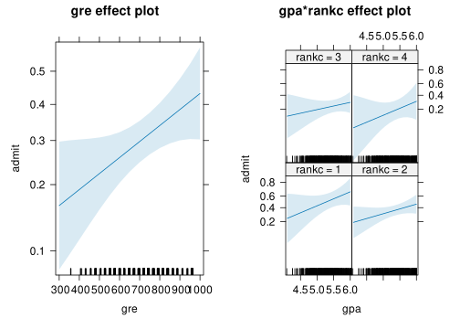
The plot on the left represent the main effect of gre and the plot on the right is the interaction between gpa and rankc. In this case we have an interaction between a numerical and a categorical variable. The model is essentially estimating the relationship between gpa and admit splitting by the level of rankc.
9. Interpreting the parameters
The interpretation of interactions (especially with categorical variables) from model parameters is not always easy because it depends on which contrasts are used. By default, R uses dummy coding where the reference level of the factor (rankc) is the first category and all the other categories are compared to the reference. This influence also other parameters:
(Intercept): log odds of being admitted forgpa = 0,gre = 0andrankcat the reference (i.e., 1)gpa: the increase in log odds of being admitted for a unit increase in thegpafor people in the reference level ofrankc(i.e., 1)gre: the increase in log odds of being admitted for a unit increase in thegrefor people in the reference level ofrankc(i.e., 1)rankc2: is the difference in the log odds of being admitted betweenrankc2andrankc1(i.e. is the log odds ratio) whengpaandgreare 0rankc3: is the difference in the log odds of being admitted betweenrankc3andrankc1(i.e. is the log odds ratio) whengpaandgreare 0rankc4: is the difference in the log odds of being admitted betweenrankc4andrankc1(i.e. is the log odds ratio) whengpaandgreare 0gpa:rankc2: the difference betweenrankc2 and 1 in the rate of increase of the log odds of being admitted for a unit increase in thegpagpa:rankc3: the difference betweenrankc3 and 1 in the rate of increase of the log odds of being admitted for a unit increase in thegpagpa:rankc4: the difference betweenrankc4 and 1 in the rate of increase of the log odds of being admitted for a unit increase in thegpa
For complex interactions like this, a suggestion is to plot the effects (as we did before) and to estimate the individual slopes checking if the interpretation is correct:
# emmeans is an options to estimate effects regardless the model parameters
emm <- data.frame(emmeans::emtrends(fit1, ~rankc, var = "gpa"))
emm rankc gpa.trend SE df asymp.LCL asymp.UCL
1 1 0.9832606 0.6600694 Inf -0.3104517 2.276973
2 2 0.6742941 0.4370205 Inf -0.1822504 1.530839
3 3 0.5097901 0.5621005 Inf -0.5919067 1.611487
4 4 0.9775188 0.8931212 Inf -0.7729666 2.728004# reference level
emm$gpa.trend[1][1] 0.9832606# gpa:rankc2
emm$gpa.trend[2] - emm$gpa.trend[1][1] -0.3089665# ...The other difficulty with interactions is interpreting the categorical variable effects. The rankc2, rankc3 … effects are interpreted as usual BUT in the presence of interactions by definition the difference between i.e. rankc2 and rankc1 depends on the level of other variables (in particular gpa in this case). Let’s explain this visually:
This is the main effect of the rankc without considering the other variables:
plot(effects::effect("rankc", fit1))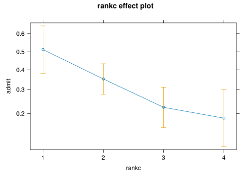
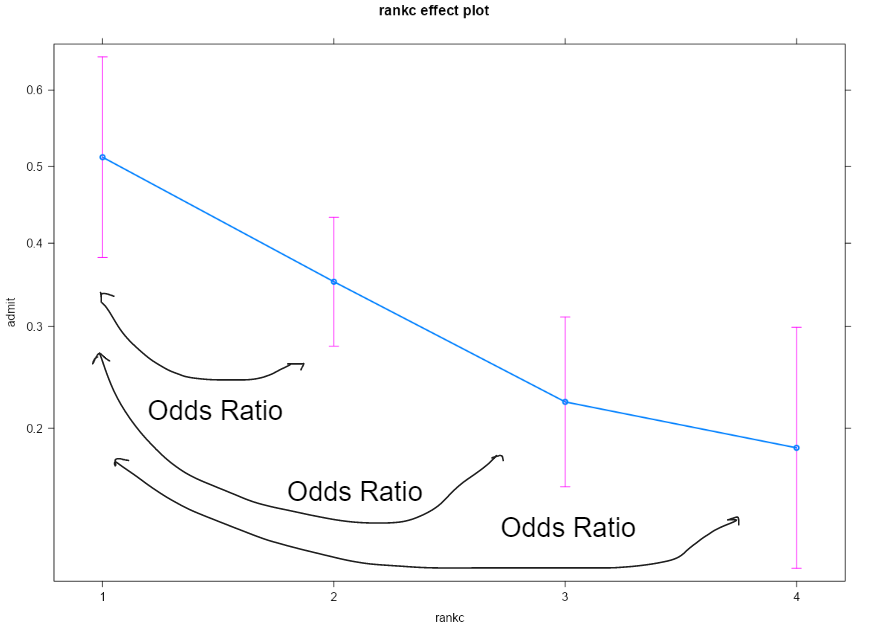
However, in the presence of interactions, the odds ratio could be influenced by the gpa level where it is evaluated:
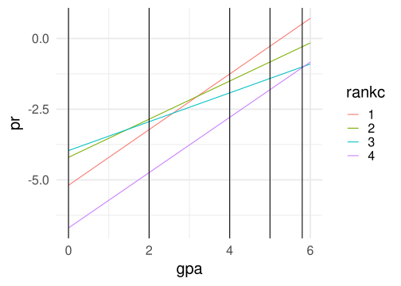
The model (without transformations), evaluate the effect of rankc when other variables are 0 and this could be meaningful or not.
Without interaction by definition the point at which I evaluate the renkc effect is not relevant.
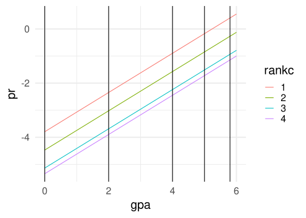
10. Inference and model comparison for the interactions effect
Even if from the plot there is evidence for a little bit of interaction (i.e, the slopes are not the same across rankc) we need a statistical test. The first option is to see the Wald test of model coefficients testing if the slopes are different (e.g., gpa:rankc2).
To test the overall interaction we can use the car::Anova() function that reports main effects and interactions:
car::Anova(fit1)Analysis of Deviance Table (Type II tests)
Response: admit
LR Chisq Df Pr(>Chisq)
gre 4.6290 1 0.03144 *
gpa 5.9022 1 0.01512 *
rankc 21.8339 3 7.063e-05 ***
gpa:rankc 0.4125 3 0.93765
---
Signif. codes: 0 '***' 0.001 '**' 0.01 '*' 0.05 '.' 0.1 ' ' 1There are the main effects of gre, gpa and rankc but there is no evidence for the interaction. The gpa:rankc test if there is at least one slope difference that is statistically significant.
To note, the car::Anova(fit1) results for the interaction is just a likelihood ratio test comparing a model with the interaction vs a model without the interaction:
fit_noint <- glm(admit ~ gre + gpa + rankc, family = binomial(link = "logit"), data = admission)
anova(fit_noint, fit1, test = "LRT")Analysis of Deviance Table
Model 1: admit ~ gre + gpa + rankc
Model 2: admit ~ gre + gpa + rankc + gpa:rankc
Resid. Df Resid. Dev Df Deviance Pr(>Chi)
1 394 458.27
2 391 457.86 3 0.41252 0.9376In fact the Chisq and the p values are the same. The model is just testing if including the interaction reduces the residual deviance.
Footnotes
The script has been adapted from the Prof. Paolo Girardi (A.Y. 2021/2022) document↩︎